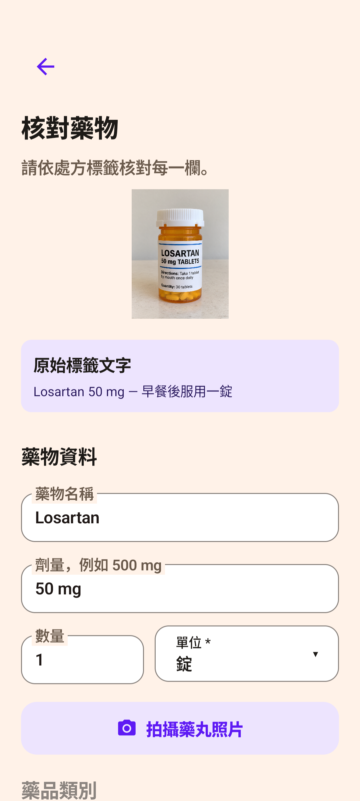
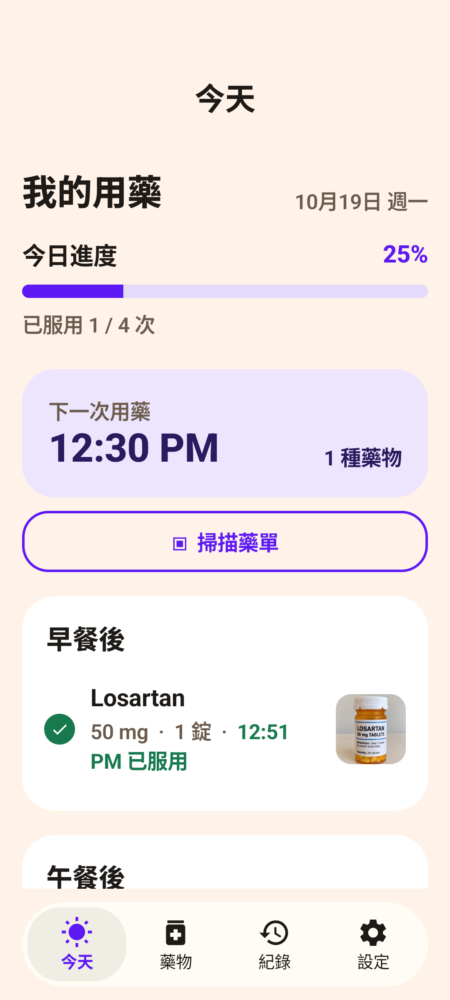
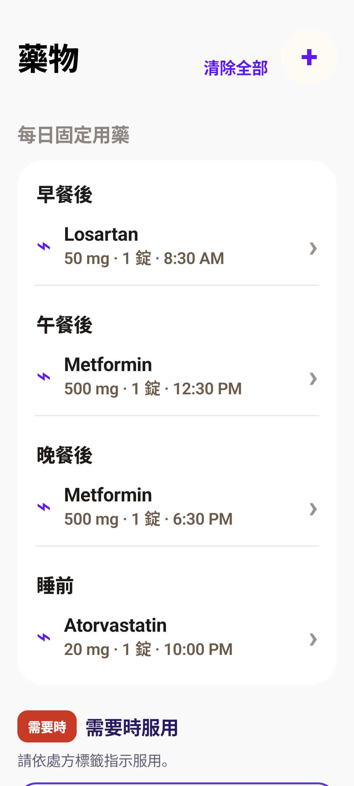

拍下藥袋，
逐項確認。
藥袋、藥單或藥品標籤都能作為輸入來源。核對藥名、劑量和時間後，再儲存提醒。

給自己，也給在意的人
Ontimo 按時吃藥，幫你整理藥袋上的資訊、設定用藥提醒，記下每一次已服用。少一點手動輸入，多一份日常安心。
無需註冊帳號 · 繁體中文／English／Bahasa Indonesia

從藥袋，到每天的提醒
AI 幫忙讀，你來確認。請一律依藥袋、處方與醫療人員指示設定。
藥袋、藥單或藥品標籤都能作為輸入來源。核對藥名、劑量和時間後，再儲存提醒。

依照處方設定日常用藥。已設定的提醒由 Android 在手機上排程，通知權限需開啟。

標記已服用，查看今天的進度，也能回看歷史紀錄。畫面中的藥物與數據僅為示範。
關於 Ontimo
他每天要吃好幾種藥，藥袋一大疊，每種藥吃的時間又不一樣。其實最麻煩的不是吃藥，而是記得什麼時候該吃哪一種。可是藥一多，記憶和藥盒都不太夠用。
所以我做了 Ontimo。
只要把藥袋、藥局標籤或紙本處方箋拍下來，Ontimo 會幫你把藥名、劑量和服用時間整理好。
設定好之後，時間到了它會提醒你，吃過的也會幫你記下來。每種藥還可以放一張照片，就算幾種藥長得很像，也比較不容易拿錯。
一開始只是想讓我爸吃藥簡單一點，後來覺得，也許其他每天要吃很多藥的人，或是幫家人整理藥物的人，也會需要它。
Ontimo，在台灣做的用藥提醒 App。
Joanne · Ontimo 開發者
ANDROID 使用費用
手動新增藥物、用藥提醒與服藥紀錄皆可免費使用。
10 次初始免費掃描
需要更多次數時，可在 App 內加購每包 20 次掃描。實際價格以 Google Play 結帳畫面為準。
此處說明 Android 版；iPhone 版請查看 App 內顯示的方案。
藥物清單與服藥紀錄存放在手機。AI 掃描照片會經 Cloudflare 傳送至 Anthropic 辨識；掃描餘額與購買驗證資料則由服務端處理。
了解 Android 資料處理方式 ↗下載之前，先看這裡
Ontimo 按時吃藥是用藥提醒與服藥紀錄 App。拍下藥袋、藥單或藥品標籤，AI 協助讀出藥名、劑量與服用方式；由你核對並儲存後，依設定時間提醒。也可以手動新增藥物。
手動新增藥物、設定吃藥提醒與查看服藥紀錄可以免費使用，不需要購買掃描次數。Android 版提供 10 次初始免費 AI 掃描；用完後可加購每包 20 次的掃描次數。實際價格以 Google Play 結帳畫面為準。
AI 掃描需要網路：照片會經由 Cloudflare 服務傳送至 Anthropic 辨識。已設定的 Android 提醒由手機本機排程，用藥紀錄也儲存在手機上。提醒是否顯示仍取決於手機的通知與鬧鐘權限。
可以在爸媽使用的手機上協助輸入藥物並設定提醒，或在照顧者使用的手機上記錄照護對象的用藥。提醒與紀錄留在設定的手機上，並不是跨手機同步或遠端確認爸媽已服藥的服務。
可以手動加入保健品名稱，依產品標示及醫療人員建議設定時間。Ontimo 協助提醒與記錄，不會替你判斷劑量、交互作用或適不適合服用。
儲存前請依原始藥袋或處方逐項核對藥名、劑量、數量與服用時間，並修改不正確的欄位。照片模糊或文字不清楚時，可重新拍攝或手動輸入；請勿直接採用未核對的掃描結果。
藥物清單、服藥紀錄與參考照片存放在手機上。使用 AI 掃描時，照片會送至 Anthropic 處理；Ontimo 的中繼服務不保存掃描照片或辨識出的用藥內容。服務端另保存掃描餘額、安裝識別與購買驗證等資料。完整處理方式請見 Android 隱私政策。
用藥紀錄是本機資料，清除 App 資料或移除 App 會刪除這些紀錄。掃描餘額是另一回事：請先在設定中妥善保存掃描餘額復原碼，以便重新連回餘額。復原碼不是用藥紀錄的備份。
Android 版支援繁體中文、英文與印尼文，不需要註冊帳號。可以依使用者習慣切換語言；語言支援不代表跨裝置共享紀錄。
先檢查 Ontimo 的通知權限、手機的鬧鐘與提醒權限，以及省電或背景執行設定。請先設定一個近期提醒，確認能收到通知。仍有問題可寄信至 joannesun.dev@gmail.com，附上手機型號與 Android 版本，不必附上私人藥袋。
Ontimo 是提醒與記錄工具，不能取代醫師或藥師的建議。
掃描結果請依原始藥袋逐項核對；請一律依醫療人員指示用藥。